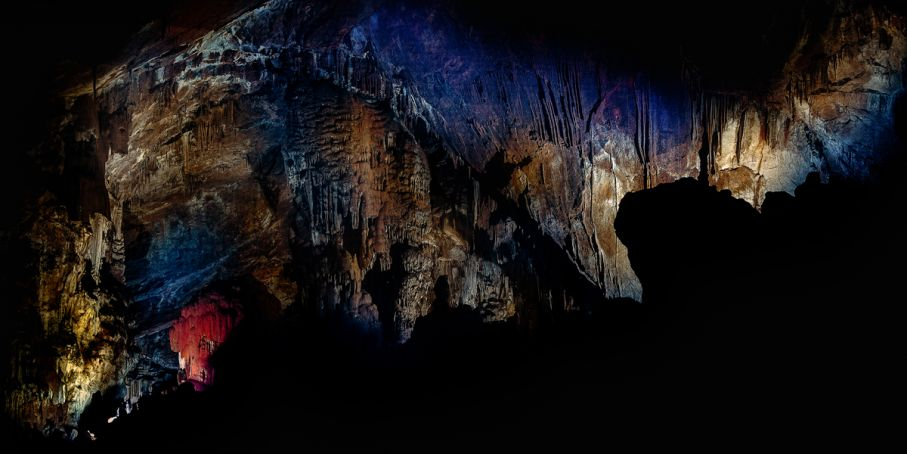

{% trans %}Zašto Paklenica?{% endtrans %}
{% trans %}Zbog svoje jedinstvene prirodne osnove, izuzetnih geomorfoloških oblika i veličanstvenih šuma, prostor Velike i Male Paklenice već je 1949. g. proglašen nacionalnim parkom. Osnovni razlog proglašenja ovog prostora nacionalnim parkom bila je zaštita najočuvanijeg i najvećeg šumskog kompleksa na području Dalmacije.{% endtrans %}
{% trans %}Nacionalni park Paklenica se prostire na površini od 95 km², na južnim obroncima Velebita, ispod najviših vrhova Vaganskog vrha (1757m) i Svetog brda (1753 m). Obuhvaća područje bujičnih tokova Velike i Male Paklenice, odnosno njihove prepoznatljive kanjone okomito urezane u južne padine Velebita, te širi okolni prostor. Na relativno malom području susreće se iznimno bogatstvo geomorfoloških pojava i oblika, raznolik biljni i životinjski svijet, atraktivni krajolici i netaknuta priroda. Raznolikost živog svijeta je uvjetovana klimatskim karakteristikama ali i bogatom i raznolikom geološkom prošlosti.{% endtrans %}
{% trans %}Manita Peć{% endtrans %}
{% trans %}Manita peć je jedina špilja na prostoru Parka koja je otvorena i uređena za posjet. Svojom prostranošću i ljepotom ukrasa oduševljava posjetitelje još od davne 1937. godine, kada je nakon uređenja staze započelo njeno posjećivanje. Ulaz u špilju nalazi se na 570 m nadmorske visine, a uspon od parkirališta u Velikoj Paklenici do nje traje oko sat i pol. Špilja obiluje špiljskim ukrasima ili sigama. Oni se razlikuju prema obliku i načinu postanka. Najčešći tipovi siga koje možete vidjeti u Manitoj peći su stalagmiti, stalaktiti, sigasti stupovi (stalagnati) i špiljske kamenice (kaskade). Neki od tih ukrasa dobili su imena po svojim zanimljivim oblicima, primjerice kaciga, orgulje i vještica.{% endtrans %}
{% trans %}Ukoliko se odlučite posjetiti Manitu peć, u njoj ćete provesti oko 30 minuta u pratnji vodiča i upoznati mnoge tajne tog zanimljivog podzemnog svijeta. Temperatura u špilji cijele godine kreće se oko 9°C, pa vam preporučujemo da u toplijem dijelu godine ponesete odgovarajuću odjeću. Obilazak špilje je moguć samo u pratnji vodiča.{% endtrans %}